4.9 综合案例：垃圾分类介绍¶
学习目标¶
- 目标
- 知道垃圾分类相关比赛问题
- 知道图像分类问题的常见优化(tricks)
- 掌握常用分类问题的数据增强方式
- mixup等
- 掌握标签平滑正则化
- 了解分类常见模型以及模型算法优化
- 应用
- 应用Tensorflow完成垃圾分类数据的读取以及处理要求
4.9.1 垃圾分类介绍¶
垃圾分类问题是2019年的社会热点问题，2019年6月25日，生活垃圾分类制度将入法。上海成为第一个中国垃圾分类试点城市。
一般是指按一定规定或标准将垃圾分类储存、分类投放和分类搬运，从而转变成公共资源的一系列活动的总称。分类的目的是提高垃圾的资源价值和经济价值，力争物尽其用。
1、垃圾分类问题的需求 ：¶
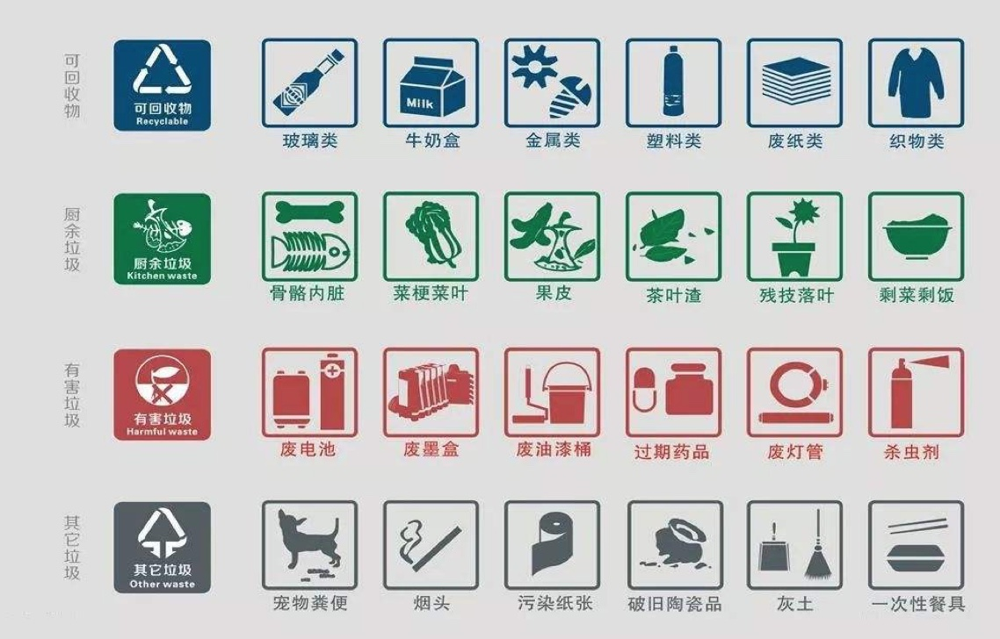
小猪佩奇版本：
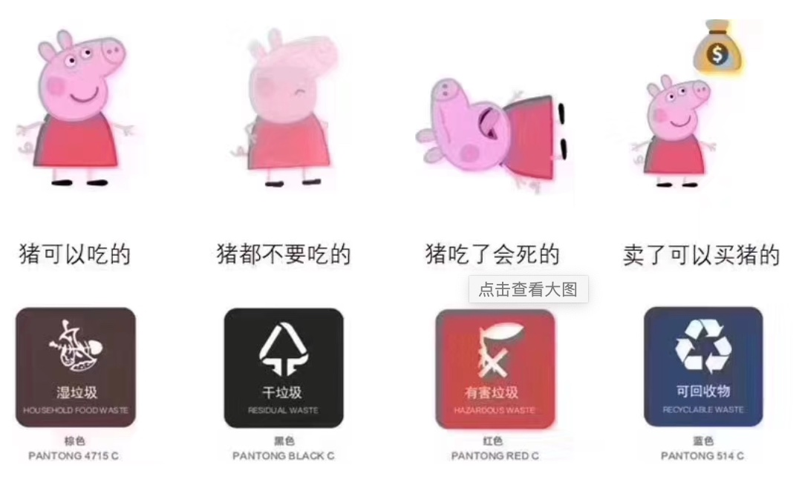
注：湿垃圾（厨余垃圾），干垃圾（其他垃圾）
分类知识小拓展：可回收物指适宜回收和资源利用的废弃物，包括废弃的玻璃、金属、塑料、纸类、织物、家具、电器电子产品和年花年桔等。厨余垃圾指家庭、个人产生的易腐性垃圾，包括剩菜、剩饭、菜叶、果皮、蛋壳、茶渣、汤渣、骨头、废弃食物以及厨房下脚料等。有害垃圾指对人体健康或者自然环境造成直接或者潜在危害且应当专门处理的废弃物，包括废电池、废荧光灯管等。其他垃圾指除以上三类垃圾之外的其他生活垃圾，比如纸尿裤、尘土、烟头、一次性快餐盒、破损花盆及碗碟、墙纸等。
2、垃圾分类意义¶
- 减少占地、减少污染、变废为宝
3、垃圾分类难点¶
- 种类多，易分错：如口香糖？湿纸巾？瓜子皮？塑料袋？
- 干，干，湿，可回收
- 自动分捡
- 人们通过手机拍照，用程序自动识别出垃圾的类别，不仅简化人们对垃圾分类的处理，而且提高垃圾分类的准确性。
4.9.1.1 垃圾分类比赛¶
- 1、华为云人工智能大赛·垃圾分类挑战杯
- 官网：https://competition.huaweicloud.com/information/1000007620/introduction
1、垃圾种类40类¶
{
"0": "其他垃圾/一次性快餐盒",
"1": "其他垃圾/污损塑料",
"2": "其他垃圾/烟蒂",
"3": "其他垃圾/牙签",
"4": "其他垃圾/破碎花盆及碟碗",
"5": "其他垃圾/竹筷",
"6": "厨余垃圾/剩饭剩菜",
"7": "厨余垃圾/大骨头",
"8": "厨余垃圾/水果果皮",
"9": "厨余垃圾/水果果肉",
"10": "厨余垃圾/茶叶渣",
"11": "厨余垃圾/菜叶菜根",
"12": "厨余垃圾/蛋壳",
"13": "厨余垃圾/鱼骨",
"14": "可回收物/充电宝",
"15": "可回收物/包",
"16": "可回收物/化妆品瓶",
"17": "可回收物/塑料玩具",
"18": "可回收物/塑料碗盆",
"19": "可回收物/塑料衣架",
"20": "可回收物/快递纸袋",
"21": "可回收物/插头电线",
"22": "可回收物/旧衣服",
"23": "可回收物/易拉罐",
"24": "可回收物/枕头",
"25": "可回收物/毛绒玩具",
"26": "可回收物/洗发水瓶",
"27": "可回收物/玻璃杯",
"28": "可回收物/皮鞋",
"29": "可回收物/砧板",
"30": "可回收物/纸板箱",
"31": "可回收物/调料瓶",
"32": "可回收物/酒瓶",
"33": "可回收物/金属食品罐",
"34": "可回收物/锅",
"35": "可回收物/食用油桶",
"36": "可回收物/饮料瓶",
"37": "有害垃圾/干电池",
"38": "有害垃圾/软膏",
"39": "有害垃圾/过期药物"
}
- 2、其他比赛
- Apache Flink极客挑战赛——垃圾图片分类
- 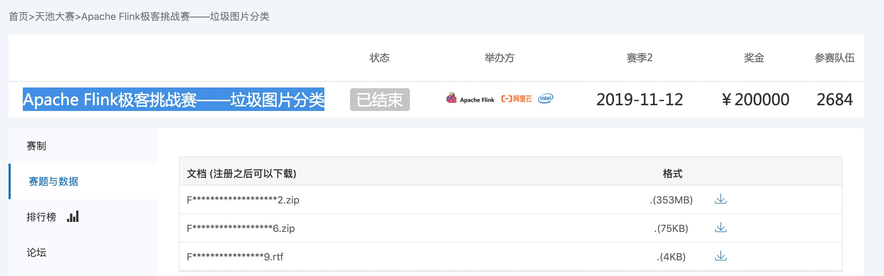
- 官方：https://tianchi.aliyun.com/competition/entrance/231743/information
4.9.2 华为垃圾分类比赛介绍¶
本次比赛选取40种生活中常见的垃圾，选手根据公布的数据集进行模型训练，将训练好的模型发布到华为ModelArts平台上，在线预测华为的私有数据集，采用识别准确率作为评价指标。这次比赛中有很多容易混淆的类，比如饮料瓶和调料瓶、筷子和牙签、果皮和果肉等外形极为相似的垃圾，因此此次竞赛也可看作是细粒度图像分类任务。
重要：比赛或者项目解题思路¶
- 1、拿到数据后，首先做数据分析。统计数据样本分布，尺寸分布，图片形态等，基于分析可以做一些针对性的数据预处理算法，对后期的模型训练会有很大的帮助
- 2、选择好的baseline。需要不断的尝试各种现有的网络结构，进行结果对比，挑选出适合该网络的模型结构，然后基于该模型进行不断的调参，调试出性能较好的参数
- 3、做结果验证，将上述模型在验证集上做结果验证，找出错误样本，分析出错原因，然后针对性的调整网络和数据。
- 3、基于新数据和模型，再次进行模型调优
比赛表现前5团队效果¶
| 名次 | 准确率 | 推理(inference)时间(ms) |
|---|---|---|
| 第一名 | 0.969636 | 102.8 |
| 第二名 | 0.96251 | 95.43 |
| 第三名 | 0.962045 | 97.25 |
| 第四名 | 0.961735 | 82.99 |
| 第五名 | 0.957397 | 108.49 |
4.9.2.1 赛题分析¶
1、问题描述:¶
经典图像分类问题。采用深圳市垃圾分类标准，输出该物品属于可回收物、 厨余垃圾、有害垃圾和其他垃圾中的二级分类，共43个类别。
2、评价指标:¶
识别准确率 = 识别正确的图片数 / 图片总数
3、挑战:¶
- 官方训练集有19459张图片，数据量小;
- 类别较多(40)，且各类样本不平衡;
- 图片大小、分辨率不一，垃圾物品有多种尺度;
- 垃圾分类是细粒度、粗粒度兼有的一种分类问题，轮廓、纹理、对象位置分 布都需要考察
4.9.2.2 对策¶
- 1、数据集分析和选择
- 2、模型选择
- 3、图像分类问题常见trick（优化）
1、数据集情况¶
数据集下载以及组成
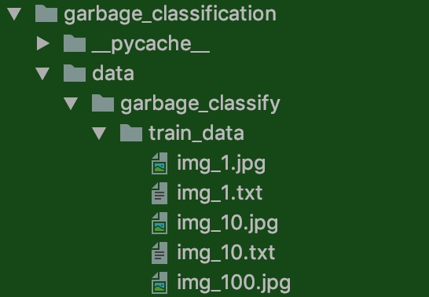
- 组成有train_data，然后同目录下有图片以及对应txt
- txt中的格式：img_1.jpg, 0-为图片以及对应目标
- 注：官方还有V2版本的数据，拓展了类别共43类（我们后面的项目是在第一个版本的数据中做训练）
2、分类模型选择¶
数据量小、类别多、推理时间短->综合考察计 算量、体积、精度，选择近期才发布的高质量 预训练模型(EfficientNet B5/B4)进行迁移 学习
（1）现有模型以及准确率对比¶
Top-1 准确率和 Top-5 准确率都是在 ImageNet 验证集上的结果。

| Architecture | @top1* | @top5* | Weights |
|---|---|---|---|
| EfficientNetB0 | 0.7668 | 0.9312 | + |
| EfficientNetB1 | 0.7863 | 0.9418 | + |
| EfficientNetB2 | 0.7968 | 0.9475 | + |
| EfficientNetB3 | 0.8083 | 0.9531 | + |
Tensorflow在 ImageNet 上预训练过的用于图像分类的模型（TFAPI文档，官网会推荐安装）：
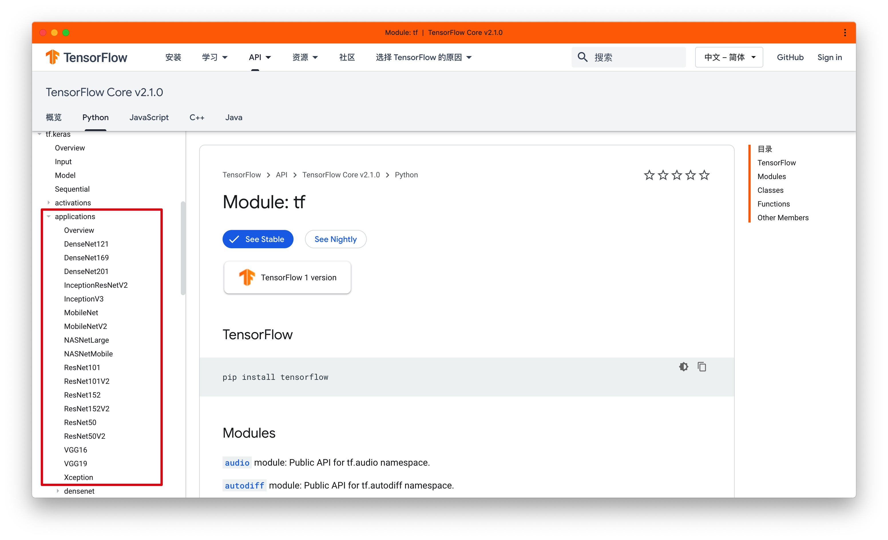
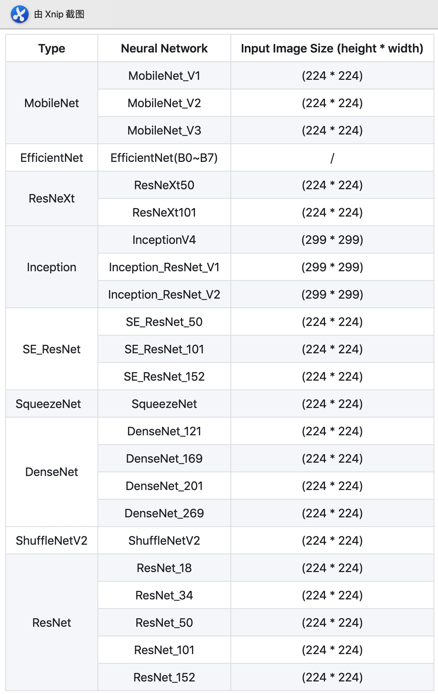
# 输入大小
EfficientNetB0 - (224, 224, 3)
EfficientNetB1 - (240, 240, 3)
EfficientNetB2 - (260, 260, 3)
EfficientNetB3 - (300, 300, 3)
EfficientNetB4 - (380, 380, 3)
EfficientNetB5 - (456, 456, 3)
EfficientNetB6 - (528, 528, 3)
EfficientNetB7 - (600, 600, 3)
注：项目降到模型部分会详细介绍模型
3、 图像分类问题常见trick（优化）¶
（1）数据方面¶
- 分析：下图横坐标是类标号，纵坐标是每个类的样本数量。
- 很容易看出，每个类之间的样本量差异很大，如果不做类均衡处理，很有可能会导致样本量多的类过拟合，样本量少的类欠拟合。
- 常见的类均衡方法有：多数类欠采样，少数类过采样；数据增强；标签平滑；
- 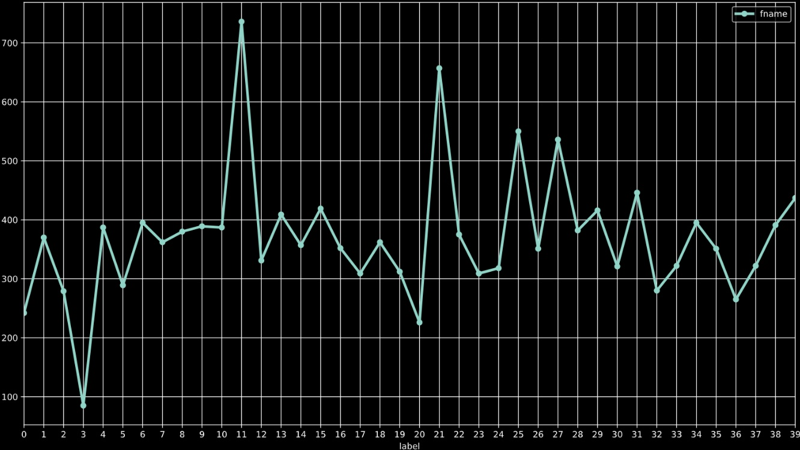
- 图片长宽比有一定的差异性，长宽比大多数集中于1，因此也适合一些模型输入尺寸设为1：1
- 1、数据增强
- （1）并非所有数据增强方法都有效，要保证数据增强后目标仍可肉眼分辨，且不改变图像所属类别。
- （2）过多的数据增强也会延长模型训练时间，通常翻转的效果不错（随机水平翻转、随机垂直翻转、以一定概率随机旋转90°、180°、270°、随机crop(0-10%)等）
- 其他如下：
- Color Jittering:对颜色的数据增强:图像亮度、饱和度、对比度变化
- Random Scale:尺度变换;
- Random Crop:采用随机图像差值方式，对图像进行裁剪、缩放
- Horizontal/Vertical Flip:水平/垂直翻转;
- Shift:平移变换;
- Rotation/Reflection:旋转/仿射变换;
- Noise:高斯噪声、模糊处理;
- 2、外部数据：比赛不限制使用外部数据，也就是说可以通过自己拍照、网上爬取等方式获得更多的训练数据，但比较费时耗力。通常自己找的数据集质量也不够好，与华为公布的数据集分布不同，有些团队爬取一些额外数据，最终效果都不好，甚至降低了分数，因此放弃了这种方法。所以在一开始构造好数据分布很重要。（比赛与项目会有些差异，真正项目其实还是更多覆盖数据分布越好，比赛可能只是华为公开的数据集包括测试的数据分布一样的，导致不能拿过多的外部数据（容易过拟合））
- 3、数据归一化
- 4、标签平滑
- 5、mixup
（2）发掘与训练模型的潜力：¶
- 1、使用多种模型进行对比实验
- 2、选择改进的Adam优化方法 ：Adam with warm up优化器
- 3、自定义学习率-余弦退火学习率
- 自带warmup的学习率控制对迭代次数比较稳健(只要达到足够的迭代次数，最终结果都比 较接近)，大大降低调参复杂性，缩短实验周期
4.9.3 项目构建（模块分析）¶
4.9.3.1 项目模块图¶
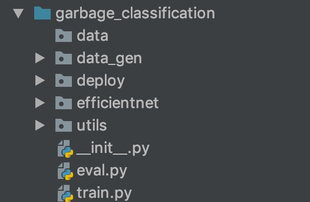
- data:存放数据的目录
- data_gen目录：批次数据预处理代码，包括数据增强、标签平滑、mixup功能
- deploy：模型导出以及部署模块
- efficientnet:efficientnet模型源码存放位置
- utils:封装的工具类，如warmup以及余弦退火学习率
- train.y与eval.py：训练网络部分包括数据流获取、网络构建、优化器
项目运行过程数据记录以及最终效果¶
- 在16核、内存16G的机器上，只用CPU计算1 epoch耗时1.83小时（1小时50分钟）
Epoch 1/30
76/787 [=>............................] - ETA: 1:49:16 - loss: 3.7690 - accuracy: 0.0189
303/787 [==========>...................] - ETA: 1:07:05 - loss: 3.7383 - accuracy: 0.025
468/787 [================>.............] - ETA: 43:30 - loss: 3.7253 - accuracy: 0.0262
470/787 [================>.............] - ETA: 43:13 - loss: 3.7251 - accuracy: 0.0261
499/787 [==================>...........] - ETA: 39:12 - loss: 3.7232 - accuracy: 0.0270
576/787 [====================>.........] - ETA: 28:35 - loss: 3.7188 - accuracy: 0.0290
577/787 [====================>.........] - ETA: 28:26 - loss: 3.7187 - accuracy: 0.0290
602/787 [=====================>........] - ETA: 25:01 - loss: 3.7170 - accuracy: 0.0295
612/787 [======================>.......] - ETA: 23:39 - loss: 3.7163 - accuracy: 0.0298
...
786/787 [============================>.] - ETA: 8s - loss: 3.7085 - accuracy: 0.0319
项目训练代码初始-训练流程¶
下面简单的介绍一下整个工程中最关键的训练部分代码
import multiprocessing
import numpy as np
import argparse
import tensorflow as tf
from tensorflow.keras.callbacks import ReduceLROnPlateau
from tensorflow.keras.callbacks import TensorBoard, Callback
from tensorflow.keras.layers import Dense, GlobalAveragePooling2D
from tensorflow.keras.models import Model
from tensorflow.keras.optimizers import Adam, RMSprop
from efficientnet import model as EfficientNet
from efficientnet import preprocess_input
from data_gen import data_flow
from utils.warmup_cosine_decay_scheduler import WarmUpCosineDecayScheduler
import os
os.environ["TF_CPP_MIN_LOG_LEVEL"] = "2"
# efficientnet源码实现用TF1.X版本，所以要关闭默认的eager模式
tf.compat.v1.disable_eager_execution()
parser = argparse.ArgumentParser()
parser.add_argument("data_url", type=str, default='./data/garbage_classify/train_data', help="data dir", nargs='?')
parser.add_argument("train_url", type=str, default='./garbage_ckpt/', help="save model dir", nargs='?')
parser.add_argument("num_classes", type=int, default=40, help="num_classes", nargs='?')
parser.add_argument("input_size", type=int, default=300, help="input_size", nargs='?')
parser.add_argument("batch_size", type=int, default=16, help="batch_size", nargs='?')
parser.add_argument("learning_rate", type=float, default=0.0001, help="learning_rate", nargs='?')
parser.add_argument("max_epochs", type=int, default=30, help="max_epochs", nargs='?')
parser.add_argument("deploy_script_path", type=str, default='', help="deploy_script_path", nargs='?')
parser.add_argument("test_data_url", type=str, default='', help="test_data_url", nargs='?')
def model_fn(param):
"""迁移学习修改模型函数
:param param:
:return:
"""
base_model = EfficientNet.EfficientNetB3(include_top=False, input_shape=(param.input_size, param.input_size, 3),
classes=param.num_classes)
x = base_model.output
x = GlobalAveragePooling2D(name='avg_pool')(x)
predictions = Dense(param.num_classes, activation='softmax')(x)
model = Model(inputs=base_model.input, outputs=predictions)
return model
def train_model(param):
"""训练模型
:param param: 传入的命令参数
:return:
"""
# 1、建立读取数据的sequence
train_sequence, validation_sequence = data_flow(param.data_url, param.batch_size,
param.num_classes, param.input_size, preprocess_input)
# 2、建立模型，指定模型训练相关参数
model = model_fn(param)
optimizer = Adam(lr=param.learning_rate)
objective = 'categorical_crossentropy'
metrics = ['accuracy']
# 模型修改
# 模型训练优化器指定
model.compile(loss=objective, optimizer=optimizer, metrics=metrics)
model.summary()
# 判断模型是否加载历史模型
if os.path.exists(param.train_url):
filenames = os.listdir(param.train_url)
model.load_weights(filenames[-1])
print("加载完成!!!")
# 3、指定训练的callbacks，并进行模型的训练
# （1）Tensorboard
tensorboard = tf.keras.callbacks.TensorBoard(log_dir='./graph', histogram_freq=1,
write_graph=True, write_images=True)
# （2）自定义warm up和余弦学习率衰减
sample_count = len(train_sequence) * param.batch_size
epochs = param.max_epochs
warmup_epoch = 5
batch_size = param.batch_size
learning_rate_base = param.learning_rate
total_steps = int(epochs * sample_count / batch_size)
warmup_steps = int(warmup_epoch * sample_count / batch_size)
warm_up_lr = WarmUpCosineDecayScheduler(learning_rate_base=learning_rate_base,
total_steps=total_steps,
warmup_learning_rate=0,
warmup_steps=warmup_steps,
hold_base_rate_steps=0,
)
#（3）模型保存相关参数
check = tf.keras.callbacks.ModelCheckpoint(param.train_url+'weights_{epoch:02d}-{val_acc:.2f}.h5',
monitor='val_acc',
save_best_only=True,
save_weights_only=False,
mode='auto',
period=1)
# （4）训练
model.fit_generator(
train_sequence,
steps_per_epoch=len(train_sequence),
epochs=param.max_epochs,
verbose=1,
callbacks=[check, tensorboard, warm_up_lr],
validation_data=validation_sequence,
max_queue_size=10,
workers=int(multiprocessing.cpu_count() * 0.7),
use_multiprocessing=True,
shuffle=True
)
print('模型训练结束!')
4.9.3.2 步骤以及知识点应用分析¶
- 1、数据读取以及预处理模块
- 数据获取
- 数据增强
- 归一化
- 随机擦除
- Mixup
- 2、模型网络结构实现
- efficientnet模型介绍
- 垃圾分类模型修改
- 模型学习率优化-warmup与余弦退火学习率
- 模型优化器-Adam优化器改进RAdam/NRdam
- 3、模型训练保存与预测
- 模型完整训练过程实现
- 预估流程实现
- 4、模型导出以及部署
- tf.saved_model模块使用
- TensorFlow serving模块使用
上面是垃圾分类项目要掌握的知识点，也是要去实现项目训练的关键
4.9.4 数据读取与预处理¶
4.9.4.1 项目预处理模代码流程介绍¶
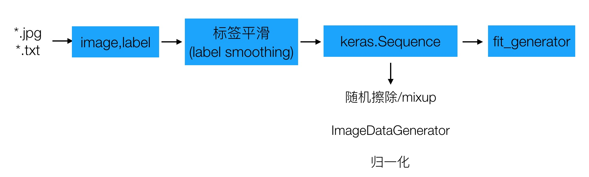
代码流程介绍¶
- 1、本地数据的读取，进行图片路径读取，标签读取，对标签进行平滑处理
- 2、tf.keras.Sequence类封装，返回序列数据
完整流程：
def data_from_sequence(train_data_dir, batch_size, num_classes, input_size):
"""读取本地图片和标签数据，处理成sequence数据类型
:param train_data_dir: 训练数据目录
:param batch_size: 批次大小
:param num_classes: 垃圾分类总类别数
:param input_size: 输入模型的图片大小(300, 300)
:return:
"""
# 1、获取txt文件，打乱一次文件
label_files = [os.path.join(train_data_dir, filename) for filename in os.listdir(train_data_dir) if filename.endswith('.txt')]
print(label_files)
random.shuffle(label_files)
# 2、读取txt文件，解析出
img_paths = []
labels = []
for index, file_path in enumerate(label_files):
with open(file_path, 'r') as f:
line = f.readline()
line_split = line.strip().split(', ')
if len(line_split) != 2:
print('%s 文件中格式错误' % (file_path))
continue
# 获取图片名称和标签，转换格式
img_name = line_split[0]
label = int(line_split[1])
# 图片完整路径拼接，并获取到图片和标签列表中（顺序一一对应）
img_paths.append(os.path.join(train_data_dir, img_name))
labels.append(label)
# 3、进行标签类别处理，以及标签平滑
labels = to_categorical(labels, num_classes)
labels = smooth_labels(labels)
# 4、进行所有数据的分割，训练集和验证集
train_img_paths, validation_img_paths, train_labels, validation_labels = \
train_test_split(img_paths, labels, test_size=0.15, random_state=0)
print('总共样本数: %d, 训练样本数: %d, 验证样本数据: %d' % (
len(img_paths), len(train_img_paths), len(validation_img_paths)))
# 5、sequence序列数据制作
train_sequence = GarbageDataSequence(train_img_paths, train_labels, batch_size,
[input_size, input_size], use_aug=True)
validation_sequence = GarbageDataSequence(validation_img_paths, validation_labels, batch_size,
[input_size, input_size], use_aug=False)
return train_sequence, validation_sequence
1、本地数据的读取，进行图片路径读取，标签读取，对标签进行平滑处理¶
新建一个data_gen的目录，新建processing_data.py，实现下面这个将在模型训练中调用的数据处理主函数
import math
import os
import random
import numpy as np
from PIL import Image
from tensorflow.keras.preprocessing.image import ImageDataGenerator
from tensorflow.keras.utils import to_categorical, Sequence
from sklearn.model_selection import train_test_split
from data_gen.random_eraser import get_random_eraser
def data_from_sequence(train_data_dir, batch_size, num_classes, input_size):
"""读取本地图片和标签数据，处理成sequence数据类型
:param train_data_dir: 训练数据目录
:param batch_size: 批次大小
:param num_classes: 垃圾分类总类别数
:param input_size: 输入模型的图片大小(300, 300)
:return:
"""
# 1、获取txt文件，打乱一次文件
label_files = [os.path.join(train_data_dir, filename) for filename in os.listdir(train_data_dir) if filename.endswith('.txt')]
print(label_files)
random.shuffle(label_files)
# 2、读取txt文件，解析出
img_paths = []
labels = []
for index, file_path in enumerate(label_files):
with open(file_path, 'r') as f:
line = f.readline()
line_split = line.strip().split(', ')
if len(line_split) != 2:
print('%s 文件中格式错误' % (file_path))
continue
# 获取图片名称和标签，转换格式
img_name = line_split[0]
label = int(line_split[1])
# 图片完整路径拼接，并获取到图片和标签列表中（顺序一一对应）
img_paths.append(os.path.join(train_data_dir, img_name))
labels.append(label)
# 3、进行标签类别处理，以及标签平滑
labels = to_categorical(labels, num_classes)
labels = smooth_labels(labels)
return None
(1) 数据读取和类别转换以及标签平滑¶
to_categorical使用介绍：
In [5]: tf.keras.utils.to_categorical([1,2,3,4,5], num_classes=10)
Out[5]:
array([[0., 1., 0., 0., 0., 0., 0., 0., 0., 0.],
[0., 0., 1., 0., 0., 0., 0., 0., 0., 0.],
[0., 0., 0., 1., 0., 0., 0., 0., 0., 0.],
[0., 0., 0., 0., 1., 0., 0., 0., 0., 0.],
[0., 0., 0., 0., 0., 1., 0., 0., 0., 0.]], dtype=float32)
1、标签平滑-Label Smoothing Regularization¶
Label Smoothing就是一种抑制过拟合的手段。
-
思想：在训练时即假设标签可能存在错误，避免“过分”相信训练样本的标签。就是要告诉模型，样本的标签不一定正确，那么训练出来的模型对于少量的样本错误就会鲁棒性更强。
-
过程：在每次迭代时，并不直接将(xi,yi)放入训练集，而是设置一个错误率ε，以1-ε的概率将(xi,yi)代入训练，以ε的概率将(xi,1-yi)代入训练
-
$$ q_i=\begin{cases}1-\varepsilon, \text{if i=y,} \\\\\frac{\varepsilon}{K-1}, \text{others} \end{cases} $$ -
比如：我们的二分类猫/狗示例，0.1 的标签平滑意味着目标答案将是 0.90(90%确信)这是一个狗的图像，而 0.10(10%确信)这是一只猫，而不是先前的向 1 或 0 移动的结果。由于不太确定，它作为一种正则化形式，提高了它对新数据的预测能力。
-
Label Smoothing的工作原理是对原来的[0 1]这种标注做一个改动，假设我们给定Label Smoothing的值为0.1：[0,1]×(1−0.1)+0.½=[0.05,0.95]
-
公式原理讲解：
-
正常交叉熵可以写作：
$$ H(y, p) = \sum_{k=1}^{K}{-y_{k}}log(p_{k}) $$
-
标签平滑化后变成：
-
y_{k}^{LS} = y_{k}(1 - \alpha) + \alpha / K
-
-
理解：
- 没有标签平滑计算的损失只考虑正确标签位置的损失，而不考虑其他标签位置的损失，这就会使得模型过于关注增大预测正确标签的概率，而不关注减 少预测错误标签的概率，最后导致的结果是模型在自己的训练集上拟合效果 非常良好，而在其他的测试集结果表现不好，即过拟合。
- 平滑过后的样本交叉熵损失就不仅考虑到了训练样本中正确的标签位置 (one-hot标签为1的位置)的损失，也稍微考虑到其他错误标签位置(one- hot标签为0的位置)的损失，导致最后的损失增大，导致模型的学习能力提 高，即要下降到原来的损失，就得学习的更好，也就是迫使模型往增大正确 分类概率并且同时减小错误分类概率的方向前进。
来自于论文：论文:Rethinking the Inception Architecture for ComputerVision
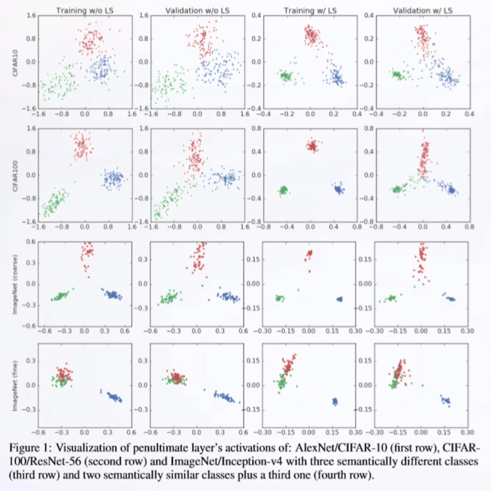
注：前两列的模型未进行标签平滑处理，后两 列使用了标签平滑技术
-
现象：可见标签平滑技术可以使得网络倒数第二层激活函数的表示的聚类更加紧密。 标签平滑提高了最终的精度
-
通常用于：图片分类、机器翻译和语音识别。
代码实现¶
def smooth_labels(y, smooth_factor=0.1):
assert len(y.shape) == 2
if 0 <= smooth_factor <= 1:
y *= 1 - smooth_factor
y += smooth_factor / y.shape[1]
else:
raise Exception(
'Invalid label smoothing factor: ' + str(smooth_factor))
return y
2、tf.keras.Sequence类封装，返回序列数据¶
首先介绍一下Sequence以及其他相关方法之间的关系。之前接触过有tf.data以及tf.keras.preprocessing.image中的ImageDataGenerator，前面可以构造自定义批次等等，后者提供了默认的数据增强方法实现批次数据迭代返回。但是对于很多任务来说我们需要做更多的有些自定义预处理，如标签平滑，随机擦出等等，在一个API中无法完全实现，现在我们会介绍一个能实现更自由的各个时间内修改数据集的工具Sequence
-
tf.keras.utils.Sequence
-
1、每个人都
Sequence必须实现__getitem__和__len__方法。如果您想在各个时期之间修改数据集，则可以实现on_epoch_end。该方法__getitem__应返回完整的批次。也可以自定义其他方法供使用 - 2、特点：
Sequence是进行多处理的更安全方法。这种结构保证了网络在每个时间段的每个样本上只会训练一次，而生成器则不会。
官网使用案例：
from skimage.io import imread
from skimage.transform import resize
import numpy as np
import math
# Here, `x_set` is list of path to the images
# and `y_set` are the associated classes.
class CIFAR10Sequence(Sequence):
def __init__(self, x_set, y_set, batch_size):
self.x, self.y = x_set, y_set
self.batch_size = batch_size
def __len__(self):
return math.ceil(len(self.x) / self.batch_size)
def __getitem__(self, idx):
batch_x = self.x[idx * self.batch_size:(idx + 1) *
self.batch_size]
batch_y = self.y[idx * self.batch_size:(idx + 1) *
self.batch_size]
return np.array([
resize(imread(file_name), (200, 200))
for file_name in batch_x]), np.array(batch_y)
GarbageDataSequence-垃圾分类的Sequence代码解析¶
构建了一个GarbageDataSequence类别， 继承基类Sequence
class GarbageDataSequence(Sequence):
"""数据流生成器，每次迭代返回一个batch
可直接用于fit_generator的generator参数，能保证在多进程下的一个epoch中不会重复取相同的样本
"""
def __init__(self, img_paths, labels, batch_size, img_size, use_aug):
# 异常判断
self.x_y = np.hstack((np.array(img_paths).reshape(len(img_paths), 1), np.array(labels)))
self.batch_size = batch_size
self.img_size = img_size
self.alpha = 0.2
self.use_aug = use_aug
self.eraser = get_random_eraser(s_h=0.3, pixel_level=True)
def __len__(self):
return math.ceil(len(self.x_y) / self.batch_size)
@staticmethod
def center_img(img, size=None, fill_value=255):
"""改变图片尺寸到300x300，并且做填充使得图像处于中间位置
"""
h, w = img.shape[:2]
if size is None:
size = max(h, w)
shape = (size, size) + img.shape[2:]
background = np.full(shape, fill_value, np.uint8)
center_x = (size - w) // 2
center_y = (size - h) // 2
background[center_y:center_y + h, center_x:center_x + w] = img
return background
def preprocess_img(self, img_path):
"""图片的处理流程函数，数据增强、center_img处理
"""
# 1、图像读取，[180 , 200]-> （200）max(180, 200)->[300/200 * 180, 300/200 * 200]
# 这样做为了不使图形直接变形，后续在统一长宽
img = Image.open(img_path)
resize_scale = self.img_size[0] / max(img.size[:2])
img = img.resize((int(img.size[0] * resize_scale), int(img.size[1] * resize_scale)))
img = img.convert('RGB')
img = np.array(img)
# 2、数据增强：如果是训练集进行数据增强操作
# 先随机擦除，然后翻转
if self.use_aug:
img = self.eraser(img)
datagen = ImageDataGenerator(
width_shift_range=0.05,
height_shift_range=0.05,
horizontal_flip=True,
vertical_flip=True,
)
img = datagen.random_transform(img)
# 3、把图片大小调整到[300, 300, 3]，调整的方式为直接填充小的坐标。为了模型需要
img = self.center_img(img, self.img_size[0])
return img
def __getitem__(self, idx):
# 1、处理图片大小、数据增强等过程
print(self.x_y)
batch_x = self.x_y[idx * self.batch_size: (idx + 1) * self.batch_size, 0]
batch_y = self.x_y[idx * self.batch_size: (idx + 1) * self.batch_size, 1:]
batch_x = np.array([self.preprocess_img(img_path) for img_path in batch_x])
batch_y = np.array(batch_y).astype(np.float32)
# print(batch_y[1])
# 2、mixup进行构造新的样本分布数据
# batch_x, batch_y = self.mixup(batch_x, batch_y)
# 3、输入模型的归一化数据
batch_x = self.preprocess_input(batch_x)
return batch_x, batch_y
def on_epoch_end(self):
np.random.shuffle(self.x_y)
def preprocess_input(self, x):
"""归一化处理样本特征值
:param x:
:return:
"""
assert x.ndim in (3, 4)
assert x.shape[-1] == 3
MEAN_RGB = [0.485 * 255, 0.456 * 255, 0.406 * 255]
STDDEV_RGB = [0.229 * 255, 0.224 * 255, 0.225 * 255]
x = x - np.array(MEAN_RGB)
x = x / np.array(STDDEV_RGB)
return x
def mixup(self, batch_x, batch_y):
"""
数据混合mixup
:param batch_x: 要mixup的batch_X
:param batch_y: 要mixup的batch_y
:return: mixup后的数据
"""
size = self.batch_size
l = np.random.beta(self.alpha, self.alpha, size)
X_l = l.reshape(size, 1, 1, 1)
y_l = l.reshape(size, 1)
X1 = batch_x
Y1 = batch_y
X2 = batch_x[::-1]
Y2 = batch_y[::-1]
X = X1 * X_l + X2 * (1 - X_l)
Y = Y1 * y_l + Y2 * (1 - y_l)
return X, Y
if __name__ == '__main__':
train_data_dir = '../data/garbage_classify/train_data'
batch_size = 32
train_sequence, validation_sequence = data_from_sequence(train_data_dir, batch_size, num_classes=40, input_size=300)
for i in range(100):
print("第 %d 批次数据" % i)
batch_data, bacth_label = train_sequence.__getitem__(i)
print(batch_data.shape, bacth_label.shape)
batch_data, bacth_label = validation_sequence.__getitem__(i)
（1）数据增强选择方法¶
构建了一套复杂且有效的数据增强框架，涵盖几何变换、随机擦除、Mixup策略。
- 组合策略仅需少量参数调节即可适用于多种数据集，效果超过谷歌在Imagenet上搜索得到的Auto-augment策略
- 更有效的捕捉多种分辨率、多尺度、多粒度图片的轮廓、纹 理、位置分布等特征
1、混合训练（Mixup Training）¶
Mixup是一种非常规的数据增强方法，一个和数据无关的简单数据增强原则，其以线性插值的方式来构建新的训练样本和标签。
- 随机取两个样本，通过加权线性插值构建一个新的样本。
- 新的样本的输入和真实概率分布为：
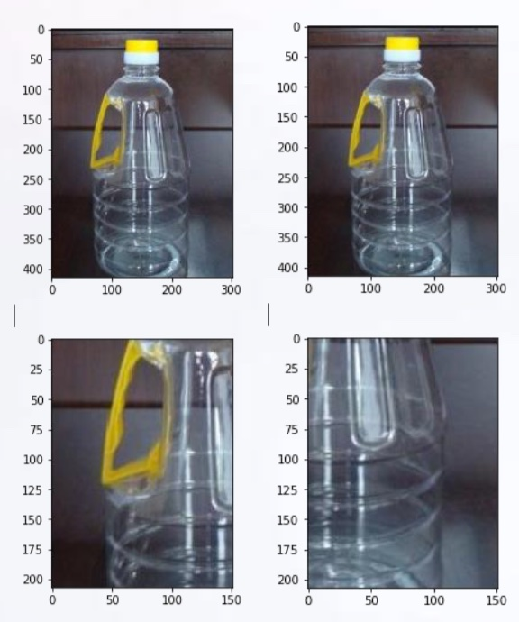
mixup策略实现，封装在
def mixup(self, batch_x, batch_y):
"""
数据混合mixup
:param batch_x: 要mixup的batch_X
:param batch_y: 要mixup的batch_y
:return: mixup后的数据
"""
size = self.batch_size
l = np.random.beta(self.alpha, self.alpha, size)
X_l = l.reshape(size, 1, 1, 1)
y_l = l.reshape(size, 1)
X1 = batch_x
Y1 = batch_y
X2 = batch_x[::-1]
Y2 = batch_y[::-1]
X = X1 * X_l + X2 * (1 - X_l)
Y = Y1 * y_l + Y2 * (1 - y_l)
return X, Y
2、Random Erasing原理:¶
训练时，随机擦除方法会在原图随机选择一个矩 形区域，将该区域的像素替换为随机值。这个过 程中，参与训练的图片会做不同程度的遮挡，这 样可以降低过拟合的风险并提高模型的鲁棒性。 随机擦除是独立于参数学习过程的，因此可以整 合到任何基于CNN的识别模型中。
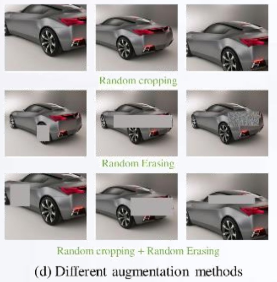
封装在random_eraser.py文件中。
import numpy as np
import tensorflow as tf
def get_random_eraser(p=0.5, s_l=0.02, s_h=0.4, r_1=0.3, r_2=1/0.3, v_l=0, v_h=255, pixel_level=False):
def eraser(input_img):
img_h, img_w, img_c = input_img.shape
p_1 = np.random.rand()
if p_1 > p:
return input_img
while True:
s = np.random.uniform(s_l, s_h) * img_h * img_w
r = np.random.uniform(r_1, r_2)
w = int(np.sqrt(s / r))
h = int(np.sqrt(s * r))
left = np.random.randint(0, img_w)
top = np.random.randint(0, img_h)
if left + w <= img_w and top + h <= img_h:
break
if pixel_level:
c = np.random.uniform(v_l, v_h, (h, w, img_c))
else:
c = np.random.uniform(v_l, v_h)
input_img[top:top + h, left:left + w, :] = c
return input_img
return eraser
注：这些代码不需要去实现，有很多现成实现好的方法
3、ImageDataGenerator-提供主要翻转方法¶
如下使用，进行随机水平/垂直翻转。
datagen = ImageDataGenerator(
horizontal_flip=True,
vertical_flip=True,
)
最后实现测试结果：
...
第 10 批次数据
(32, 300, 300, 3) [[0.0025 0.0025 0.0025 ... 0.0025 0.0025 0.0025]
[0.0025 0.0025 0.0025 ... 0.0025 0.0025 0.0025]
[0.0025 0.0025 0.0025 ... 0.0025 0.0025 0.0025]
...
[0.0025 0.0025 0.0025 ... 0.0025 0.0025 0.0025]
[0.0025 0.0025 0.0025 ... 0.0025 0.0025 0.0025]
[0.0025 0.0025 0.0025 ... 0.0025 0.0025 0.0025]]
4.9.5 总结¶
- 知道垃圾分类相关比赛问题
- 知道图像分类问题的常见优化(tricks)
- 常用分类问题的数据增强方式
- mixup
- 随机擦除
- 翻转
- 标签平滑正则化
- 分类常见模型以及模型算法优化